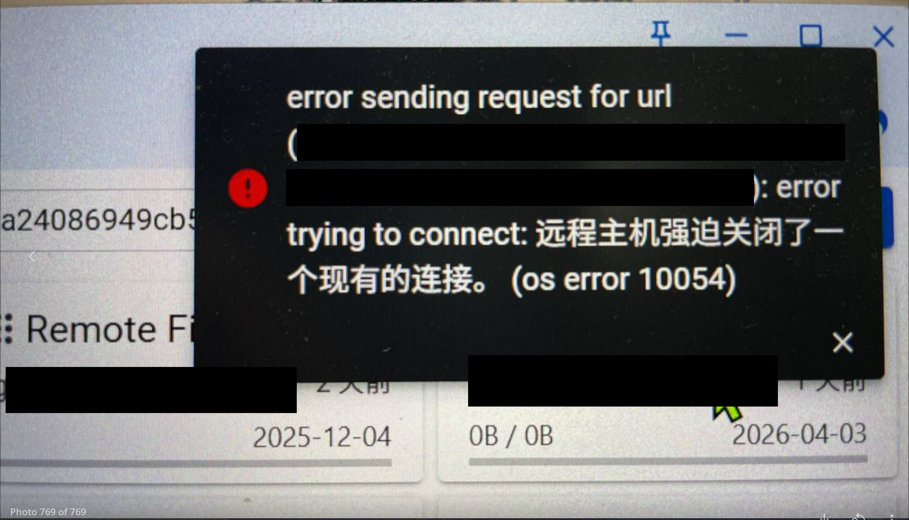
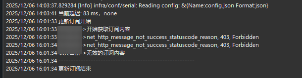
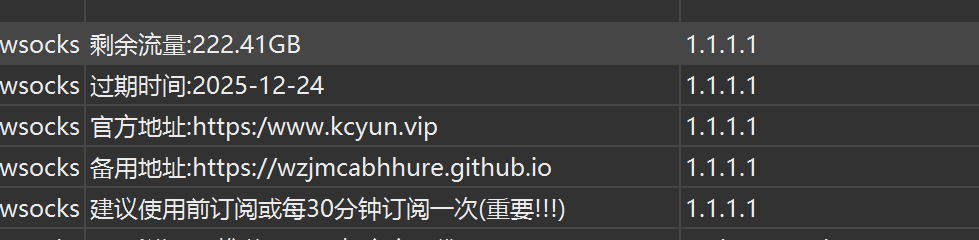

@T5618B_WAN 虽然但是我为了防止打不开要梯子的机场官网，买了两台vps搭建了备用线路，梯子我主要是用来解各区流媒体的，不看ip属性无需解锁的普通大流量使用用自建线路就够了（比如yt直播）




总结下买了机场之后还需要做的事，欢迎补充
假如你买的机场用不了了，然后你着急忙慌的更新订阅，mihomo/V2ray叭的一下报了个错，像图上这样
这是机场的保护策略——阅后即焚，只要请求过一次之后这链就废了，请求订阅链接拿到的是个base64编码的字符串，解码之后是十几行长这样的东西 https://t.co/bPSqnQiRRi
假如你买的机场用不了了，然后你着急忙慌的更新订阅，mihomo/V2ray叭的一下报了个错，像图上这样
这是机场的保护策略——阅后即焚，只要请求过一次之后这链就废了，请求订阅链接拿到的是个base64编码的字符串，解码之后是十几行长这样的东西 https://t.co/bPSqnQiRRi